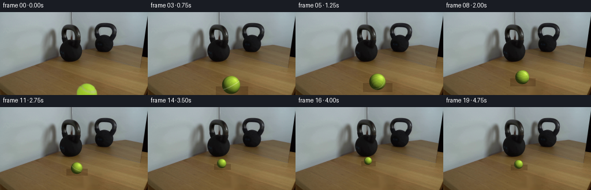
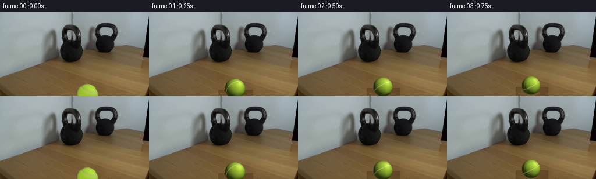
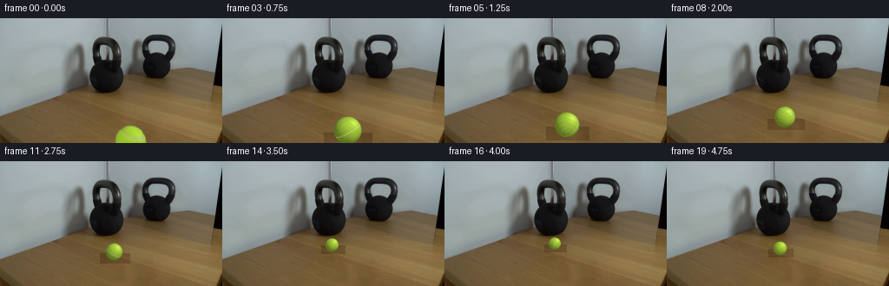
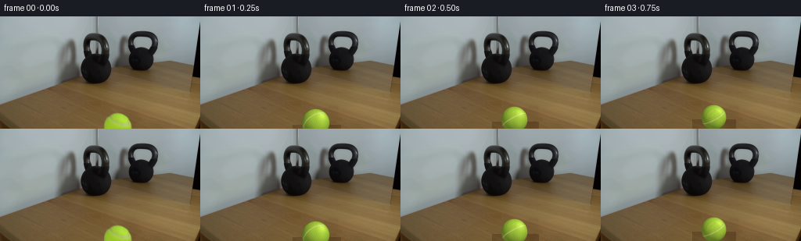
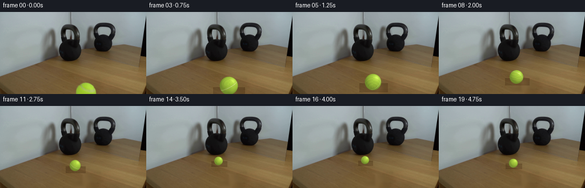
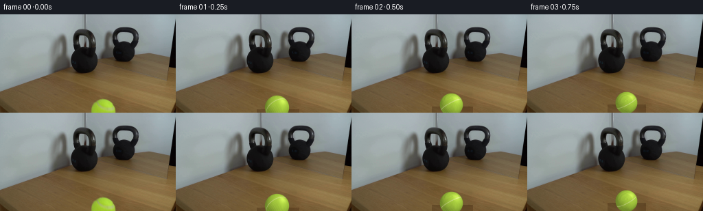

CODING AGENTS AS PIXEL WORLD MODELS
traex/DeepSeek-V4.1-Flash · 0155
点击播放 · 原生 RGB 像素
逐轮保存的候选
回放视频、检查图与代码变化。
每份候选均可单独播放。实际图片检查记录在下方工具轨迹中。
候选 01播放与检查图
点击播放 · 原生 RGB 像素


展开代码变化
--- 上一保存版本
+++ 本次保存版本
@@ -0,0 +1,202 @@
+from pathlib import Path
+
+import cv2
+import numpy as np
+
+import artifact_io
+
+
+CASE_DIR = Path(__file__).resolve().parent
+FRAME_COUNT = 20
+HEIGHT = 144
+WIDTH = 256
+
+
+def make_table_plate(frame):
+ """Remove the foreground tennis ball while preserving the tabletop."""
+ hsv = cv2.cvtColor(frame, cv2.COLOR_RGB2HSV)
+ yy, xx = np.mgrid[:HEIGHT, :WIDTH]
+ roi = (xx >= 122) & (xx <= 179) & (yy >= 114)
+ ball = (
+ roi
+ & (hsv[:, :, 0] >= 20)
+ & (hsv[:, :, 0] <= 58)
+ & (hsv[:, :, 1] >= 45)
+ & (hsv[:, :, 2] >= 35)
+ )
+ mask = cv2.dilate(ball.astype(np.uint8), np.ones((5, 5), np.uint8), iterations=1)
+
+ plate = cv2.inpaint(frame, mask * 255, 4.0, cv2.INPAINT_NS)
+
+ # OpenCV's inpainting removes the ball but can leave a smooth patch. Add a
+ # restrained sample of the surrounding wood grain so the repair reads as table.
+ y0, y1 = 116, HEIGHT
+ x0, x1 = 126, 176
+ local_mask = mask[y0:y1, x0:x1].astype(np.float32)
+ local_mask = cv2.GaussianBlur(local_mask, (0, 0), 1.0)
+ gy, gx = np.mgrid[y0:y1, x0:x1]
+ grain = (
+ 1.7 * np.sin(gx * 0.13 + gy * 0.23)
+ + 1.2 * np.sin(gx * 0.31 - gy * 0.11 + 0.7)
+ + 0.8 * np.cos(gx * 0.07 + gy * 0.41)
+ )
+ grain = grain[:, :, None] * np.array([1.0, 0.8, 0.5], np.float32)
+ patch = plate[y0:y1, x0:x1].astype(np.float32)
+ plate[y0:y1, x0:x1] = np.clip(
+ patch + grain * local_mask[:, :, None], 0, 255
+ ).astype(np.uint8)
+ return plate
+
+
+def trajectory(frame_index):
+ """Return ball center, radius, and cumulative roll for one frame."""
+ if frame_index <= 16:
+ u = frame_index / 16.0
+ s = u ** 0.94
+ cx = 150.3 - 24.3 * s
+ cy = 135.2 - 41.4 * s
+ radius = 18.1 - 11.3 * s
+ roll = 6.6 * s
+ else:
+ # A light tennis ball rebounds a little from the much heavier bell.
+ v = (frame_index - 16) / 3.0
+ cx = 126.0 + 5.0 * v
+ cy = 93.8 + 5.8 * v
+ radius = 6.8 + 0.9 * v
+ roll = 6.6 - 0.9 * v
+ return float(cx), float(cy), float(radius), float(roll)
+
+
+def render_ball(radius, roll, supersample=5):
+ """Render an anti-aliased felt-covered tennis ball."""
+ size = int(np.ceil(radius * 2.0 + 5.0))
+ big_size = size * supersample
+ center = (big_size - 1) * 0.5
+ yy, xx = np.mgrid[:big_size, :big_size].astype(np.float32)
+ x = (xx - center) / (radius * supersample)
+ y = (yy - center) / (radius * supersample)
+ rr = np.sqrt(x * x + y * y)
+ inside = rr <= 1.0
+ z = np.sqrt(np.clip(1.0 - rr * rr, 0.0, 1.0))
+
+ # Rotate the felt pattern about the horizontal rolling axis.
+ cr, sr = np.cos(roll), np.sin(roll)
+ yr = y * cr - z * sr
+ zr = y * sr + z * cr
+ longitude = np.arctan2(x, np.maximum(zr, 1e-5))
+ latitude = np.arcsin(np.clip(yr, -1.0, 1.0))
+
+ # Fine, deterministic felt fibers in spherical texture coordinates.
+ fibers = (
+ 0.55 * np.sin(39.0 * longitude + 17.0 * latitude)
+ + 0.34 * np.sin(71.0 * longitude - 29.0 * latitude + 1.2)
+ + 0.22 * np.cos(113.0 * longitude + 43.0 * latitude + 0.3)
+ )
+ broad = (
+ 0.60 * np.sin(5.0 * longitude + 3.0 * latitude + 0.4)
+ + 0.36 * np.cos(8.0 * longitude - 4.0 * latitude)
+ )
+
+ light = np.array([0.48, -0.54, 0.69], np.float32)
+ light /= np.linalg.norm(light)
+ diffuse = np.clip(x * light[0] + y * light[1] + z * light[2], 0.0, 1.0)
+ half_lambert = 0.24 + 0.76 * diffuse
+ rim = np.clip(1.0 - z, 0.0, 1.0) ** 2
+ shade = half_lambert * (1.0 - 0.20 * rim)
+
+ base = np.array([177.0, 216.0, 60.0], np.float32)
+ color = base[None, None, :] * shade[:, :, None]
+ color += fibers[:, :, None] * np.array([7.0, 8.0, 3.0], np.float32)
+ color += broad[:, :, None] * np.array([3.0, 4.0, 1.5], np.float32)
+
+ # A pale, shaded seam makes the object read specifically as a tennis ball.
+ seam_plane = np.array([0.47, 0.31, 0.83], np.float32)
+ seam_plane /= np.linalg.norm(seam_plane)
+ seam_distance = np.abs(
+ x * seam_plane[0] + yr * seam_plane[1] + zr * seam_plane[2]
+ )
+ seam_width = 0.055 + 0.012 * np.sin(11.0 * longitude + 2.0 * latitude)
+ seam_alpha = np.clip(1.0 - seam_distance / seam_width, 0.0, 1.0)
+ seam_alpha *= (0.55 + 0.45 * diffuse) * inside
+ seam_color = np.array([226.0, 224.0, 183.0], np.float32)[None, None, :]
+ color = color * (1.0 - 0.70 * seam_alpha[:, :, None])
+ color += seam_color * (0.70 * seam_alpha[:, :, None])
+
+ # Specular sheen from the room's soft, upper-right light.
+ specular = np.clip(diffuse, 0.0, 1.0) ** 18
+ color += specular[:, :, None] * np.array([36.0, 33.0, 24.0], np.float32)
+
+ alpha = np.clip((1.0 - rr) * radius * supersample + 0.5, 0.0, 1.0)
+ alpha *= inside
+ rgba = np.dstack([np.clip(color, 0, 255), alpha * 255.0]).astype(np.uint8)
+ rgba = cv2.resize(rgba, (size, size), interpolation=cv2.INTER_AREA)
+ return rgba
+
+
+def add_shadow(image, cx, cy, radius):
+ """Darken the tabletop with a soft contact shadow."""
+ x0 = max(0, int(np.floor(cx - radius * 1.7)))
+ x1 = min(WIDTH, int(np.ceil(cx + radius * 1.7 + 1)))
+ y0 = max(0, int(np.floor(cy + radius * 0.16)))
+ y1 = min(HEIGHT, int(np.ceil(cy + radius * 1.12 + 1)))
+ if x0 >= x1 or y0 >= y1:
+ return image
+
+ yy, xx = np.mgrid[y0:y1, x0:x1].astype(np.float32)
+ sx = radius * (1.12 + 0.08 * (cy - 90.0) / 50.0)
+ sy = max(1.0, radius * 0.34)
+ ox = cx + radius * 0.15
+ oy = cy + radius * 0.78
+ falloff = np.exp(
+ -0.5 * (((xx - ox) / sx) ** 2 + ((yy - oy) / sy) ** 2)
+ )
+ strength = 0.34 if radius < 10 else 0.40
+ shadow = 1.0 - strength * falloff
+ patch = image[y0:y1, x0:x1].astype(np.float32)
+ tint = np.array([0.84, 0.80, 0.76], np.float32)
+ patch *= shadow[:, :, None] * tint[None, None, :] + (1.0 - shadow[:, :, None])
+ image[y0:y1, x0:x1] = np.clip(patch, 0, 255).astype(np.uint8)
+ return image
+
+
+def composite_rgba(image, rgba, cx, cy):
+ size = rgba.shape[0]
+ left = int(np.floor(cx - size * 0.5))
+ top = int(np.floor(cy - size * 0.5))
+ x0, x1 = max(0, left), min(WIDTH, left + size)
+ y0, y1 = max(0, top), min(HEIGHT, top + size)
+ if x0 >= x1 or y0 >= y1:
+ return image
+ src = rgba[y0 - top : y1 - top, x0 - left : x1 - left]
+ alpha = src[:, :, 3:4].astype(np.float32) / 255.0
+ dst = image[y0:y1, x0:x1].astype(np.float32)
+ image[y0:y1, x0:x1] = np.clip(
+ src[:, :, :3].astype(np.float32) * alpha + dst * (1.0 - alpha), 0, 255
+ ).astype(np.uint8)
+ return image
+
+
+def generate():
+ first = cv2.imread(str(CASE_DIR / "first_frame.png"), cv2.IMREAD_COLOR)
+ if first is None:
+ raise FileNotFoundError(CASE_DIR / "first_frame.png")
+ first = cv2.cvtColor(first, cv2.COLOR_BGR2RGB)
+ if first.shape != (HEIGHT, WIDTH, 3):
+ raise ValueError(f"Unexpected first frame shape: {first.shape}")
+
+ plate = make_table_plate(first)
+ frames = np.empty((FRAME_COUNT, HEIGHT, WIDTH, 3), np.uint8)
+ frames[0] = first
+
+ for index in range(1, FRAME_COUNT):
+ cx, cy, radius, roll = trajectory(index)
+ frame = plate.copy()
+ add_shadow(frame, cx, cy, radius)
+ sprite = render_ball(radius, roll)
+ frames[index] = composite_rgba(frame, sprite, cx, cy)
+
+ return frames
+
+
+if __name__ == "__main__":
+ artifact_io.save(generate(), CASE_DIR)
候选 02播放与检查图
点击播放 · 原生 RGB 像素


展开代码变化
--- 上一保存版本
+++ 本次保存版本
@@ -50,20 +50,20 @@
def trajectory(frame_index):
"""Return ball center, radius, and cumulative roll for one frame."""
- if frame_index <= 16:
- u = frame_index / 16.0
- s = u ** 0.94
+ if frame_index <= 15:
+ u = frame_index / 15.0
+ s = u ** 0.92
cx = 150.3 - 24.3 * s
- cy = 135.2 - 41.4 * s
- radius = 18.1 - 11.3 * s
- roll = 6.6 * s
+ cy = 140.4 - 46.6 * s
+ radius = 18.7 - 11.9 * s
+ roll = 6.4 * s
else:
# A light tennis ball rebounds a little from the much heavier bell.
- v = (frame_index - 16) / 3.0
+ v = (frame_index - 15) / 4.0
cx = 126.0 + 5.0 * v
- cy = 93.8 + 5.8 * v
- radius = 6.8 + 0.9 * v
- roll = 6.6 - 0.9 * v
+ cy = 93.8 + 6.7 * v
+ radius = 6.8 + 1.1 * v
+ roll = 6.4 - 1.0 * v
return float(cx), float(cy), float(radius), float(roll)
@@ -100,11 +100,11 @@
light = np.array([0.48, -0.54, 0.69], np.float32)
light /= np.linalg.norm(light)
diffuse = np.clip(x * light[0] + y * light[1] + z * light[2], 0.0, 1.0)
- half_lambert = 0.24 + 0.76 * diffuse
+ half_lambert = 0.58 + 0.46 * diffuse
rim = np.clip(1.0 - z, 0.0, 1.0) ** 2
- shade = half_lambert * (1.0 - 0.20 * rim)
-
- base = np.array([177.0, 216.0, 60.0], np.float32)
+ shade = half_lambert * (1.0 - 0.10 * rim)
+
+ base = np.array([169.0, 207.0, 62.0], np.float32)
color = base[None, None, :] * shade[:, :, None]
color += fibers[:, :, None] * np.array([7.0, 8.0, 3.0], np.float32)
color += broad[:, :, None] * np.array([3.0, 4.0, 1.5], np.float32)
候选 03播放与检查图
点击播放 · 原生 RGB 像素


展开代码变化
--- 上一保存版本
+++ 本次保存版本
@@ -100,11 +100,11 @@
light = np.array([0.48, -0.54, 0.69], np.float32)
light /= np.linalg.norm(light)
diffuse = np.clip(x * light[0] + y * light[1] + z * light[2], 0.0, 1.0)
- half_lambert = 0.58 + 0.46 * diffuse
+ half_lambert = 0.69 + 0.35 * diffuse
rim = np.clip(1.0 - z, 0.0, 1.0) ** 2
shade = half_lambert * (1.0 - 0.10 * rim)
- base = np.array([169.0, 207.0, 62.0], np.float32)
+ base = np.array([170.0, 208.0, 64.0], np.float32)
color = base[None, None, :] * shade[:, :, None]
color += fibers[:, :, None] * np.array([7.0, 8.0, 3.0], np.float32)
color += broad[:, :, None] * np.array([3.0, 4.0, 1.5], np.float32)
@@ -150,7 +150,7 @@
falloff = np.exp(
-0.5 * (((xx - ox) / sx) ** 2 + ((yy - oy) / sy) ** 2)
)
- strength = 0.34 if radius < 10 else 0.40
+ strength = 0.40 if radius < 10 else 0.48
shadow = 1.0 - strength * falloff
patch = image[y0:y1, x0:x1].astype(np.float32)
tint = np.array([0.84, 0.80, 0.76], np.float32)
可观测工具轨迹
实际执行的命令与返回图片。
命令 1exit 0
/bin/bash -c "pwd && rg --files -g 'prompt.txt' -g 'GENERATION_RULES.md' -g 'first_frame.png' -g '"'!**/.git/**'"'"
命令 2exit 0
/bin/bash -c "find . -maxdepth 2 -type f -printf '%p\\n' | sort | head -200"
命令 3exit 0
/bin/bash -c 'git status --short 2>/dev/null || true'
命令 4exit 0
/bin/bash -c 'cat prompt.txt'
命令 5exit 0
/bin/bash -c 'cat GENERATION_RULES.md'
命令 6exit 0
/bin/bash -c "sed -n '1,260p' artifact_io.py"
命令 7exit 0
/bin/bash -c 'file first_frame.png && identify first_frame.png 2>/dev/null || true'
命令 8exit 0
/bin/bash -c "python - <<'PY'
from PIL import Image
import numpy as np
im=Image.open('first_frame.png').convert('RGB')
a=np.asarray(im)
print(im.size, a.shape, a.dtype)
print('min/max/mean/std', a.min(axis=(0,1)), a.max(axis=(0,1)), a.mean(axis=(0,1)), a.std(axis=(0,1)))
# most common colors
u,c=np.unique(a.reshape(-1,3),axis=0,return_counts=True)
for i in np.argsort(c)[-30:][::-1]: print(tuple(u[i]), int(c[i]))
PY"命令 9exit 0
/bin/bash -c "python - <<'PY'
from PIL import Image
import numpy as np
im=np.asarray(Image.open('first_frame.png').convert('RGB')).astype(float)
# 16x9 blocks
for gy in range(9):
row=[]
for gx in range(16):
b=im[gy*16:(gy+1)*16,gx*16:(gx+1)*16]
rgb=b.mean((0,1)).round().astype(int)
row.append('%02x%02x%02x'%tuple(rgb))
print('%2d '%gy+' '.join(row))
PY"命令 10exit 0
/bin/bash -c "python - <<'PY'
from PIL import Image
import numpy as np
im=Image.open('first_frame.png').convert('RGB')
# save 4x zoom and edge contrast for numeric local inspection via files
im.resize((1024,576), Image.Resampling.NEAREST).save('.tmp/first_zoom.png')
# ASCII luminance 64x36
a=np.asarray(im).astype(float).mean(2)
chars='@%#*+=-:. '
for y in range(0,144,4):
line=''
for x in range(0,256,4):
v=a[y:y+4,x:x+4].mean()
line+=chars[min(9,int(v/256*10))]
print(line)
PY"命令 11exit 0
/bin/bash -c "python - <<'PY' mods=['cv2','numpy','PIL','scipy','skimage'] for m in mods: try: x=__import__(m); print(m,'ok',getattr(x,'__version__','')) except Exception as e: print(m,'ERR',e) PY"
命令 12exit 0
/bin/bash -c "python - <<'PY'
import cv2, numpy as np
im=cv2.imread('first_frame.png')[:,:,::-1]
hsv=cv2.cvtColor(im,cv2.COLOR_RGB2HSV)
# show color clusters
Z=im.reshape(-1,3).astype(np.float32)
crit=(cv2.TERM_CRITERIA_EPS+cv2.TERM_CRITERIA_MAX_ITER,50,.2)
_,lab,cen=cv2.kmeans(Z,10,None,crit,10,cv2.KMEANS_PP_CENTERS)
counts=np.bincount(lab.ravel())
for i in np.argsort(counts)[::-1]: print(i, counts[i], cen[i].round().astype(int))
# segment likely tennis ball: yellow-green HSV hue 20-45 sat>80 val>50
mask=(hsv[:,:,0]>20)&(hsv[:,:,0]<50)&(hsv[:,:,1]>90)&(hsv[:,:,2]>50)
n,l,st,c=cv2.connectedComponentsWithStats(mask.astype(np.uint8),8)
print('green comps')
for i in range(1,n):
x,y,w,h,area=st[i]
if area>4: print(area,(x,y,w,h),'cent',c[i], 'hsv',hsv[int(c[i][1]),int(c[i][0])])
PY"命令 13exit 0
/bin/bash -c "python - <<'PY'
import cv2,numpy as np
im=cv2.imread('first_frame.png')[:,:,::-1]
# quantized map: letters for nearest of hand colors, at 2x2 or 4x4
colors={
'k':(16,15,15),'K':(44,39,34),'b':(80,71,56),'w':(112,90,58),'W':(136,111,69),'t':(111,114,112),
's':(138,148,149),'S':(153,164,166),'m':(165,176,179),'g':(163,200,61),'l':(220,220,220),'x':(230,230,230)
}
cs=np.array(list(colors.values())); keys=list(colors)
for y in range(0,144,3):
line=''
for x in range(0,256,3):
p=im[y:y+3,x:x+3].mean((0,1))
d=((cs-p)**2).sum(1)
i=d.argmin()
line+=keys[i]
print(line)
PY"命令 14exit 0
/bin/bash -c "python - <<'PY'
import cv2, numpy as np
im=cv2.imread('first_frame.png')[:,:,::-1]
hsv=cv2.cvtColor(im,cv2.COLOR_RGB2HSV)
# categories: g green, k dark, d medium dark, b brown, m mirror/gray, w wood light
for y in range(55,144,2):
line=''
for x in range(40,220,2):
p=im[y:y+2,x:x+2].mean((0,1)); h,s,v=hsv[y:y+2,x:x+2].mean((0,1))
if 25<h<55 and s>80 and v>50: c='G'
elif v<45: c='@'
elif v<75: c='#'
elif v<105: c='*'
elif s<45: c='.'
elif s<100: c=':'
elif h<20: c='o'
elif h<35: c='b'
else: c='?'
line+=c
print(f'{y:3d} '+line)
PY"命令 15exit 0
/bin/bash -c "python - <<'PY'
import cv2,numpy as np
im=cv2.imread('first_frame.png')[:,:,::-1]
hsv=cv2.cvtColor(im,cv2.COLOR_RGB2HSV)
# dark comps threshold v<55
for name,mask in [('dark',hsv[:,:,2]<55),('dark2',hsv[:,:,2]<75),('gray',(hsv[:,:,1]<35)&(hsv[:,:,2]>80)),('green',(hsv[:,:,0]>20)&(hsv[:,:,0]<55)&(hsv[:,:,1]>80)&(hsv[:,:,2]>50))]:
n,l,st,c=cv2.connectedComponentsWithStats(mask.astype(np.uint8),8)
print('\\n',name)
for i in sorted(range(1,n), key=lambda i:st[i,4], reverse=True)[:15]:
x,y,w,h,a=st[i]; print(a,(x,y,w,h),'cent',np.round(c[i],1))
PY"命令 16exit 0
/bin/bash -c "python - <<'PY'
from PIL import Image
import numpy as np
im=Image.open('first_frame.png').convert('RGB')
# crops: upper mirror and kettle, lower table/ball
im.crop((0,0,256,110)).resize((1024,440), Image.Resampling.NEAREST).save('.tmp/scene_upper_4x.png')
im.crop((0,90,256,144)).resize((1024,216), Image.Resampling.NEAREST).save('.tmp/scene_lower_4x.png')
# separate sharpened
PY"命令 17exit 0
/bin/bash -c "python - <<'PY'
import cv2,numpy as np
im=cv2.imread('first_frame.png')[:,:,::-1]
# detect table-ball boundary via green region detailed extents row
hsv=cv2.cvtColor(im,cv2.COLOR_RGB2HSV)
mask=(hsv[:,:,0]>20)&(hsv[:,:,0]<55)&(hsv[:,:,1]>70)&(hsv[:,:,2]>40)
for y in range(118,144):
xs=np.flatnonzero(mask[y])
if len(xs): print(y, xs.min(),xs.max(),len(xs))
# print pixel colors around ball center and kettle base
print('ball center',im[135,150])
print('table sample',im[110,150],im[120,100],im[135,100])
print('kettle base samples')
for y in [90,95,100,105,110]:
print(y,[tuple(im[y,x]) for x in [110,120,130,140,150,160]])
PY"命令 18exit 0
/bin/bash -c "python - <<'PY'
import cv2,numpy as np
im=cv2.imread('first_frame.png')[:,:,::-1]
# print crop 80..200 x 15..105 as edge/dark/texture ASCII high res every 2
hsv=cv2.cvtColor(im,cv2.COLOR_RGB2HSV)
for y in range(12,112,2):
line=''
for x in range(76,206,2):
p=im[y:y+2,x:x+2].mean((0,1)); h,s,v=hsv[y:y+2,x:x+2].mean((0,1))
if v<35: c='@'
elif v<60: c='#'
elif v<85: c='*'
elif v<110: c='+'
elif s<45: c='.'
elif s<90: c=':'
elif h<20: c='o'
elif h<35: c='b'
else: c='?'
line+=c
print(f'{y:3d} '+line)
PY"命令 19exit 0
/bin/bash -c "python - <<'PY'
from PIL import Image
import numpy as np, cv2
im=np.asarray(Image.open('first_frame.png').convert('RGB'))
hsv=cv2.cvtColor(im,cv2.COLOR_RGB2HSV)
print('ball pixel categorical map')
# threshold based on hue/sat
for y in range(116,144):
line=''
for x in range(124,177):
r,g,b=im[y,x]; h,s,v=hsv[y,x]
if 20<h<58 and s>70 and v>45:
if v>210: c='O'
elif v>175: c='o'
elif v>140: c='+'
else: c='-'
elif v<70: c='#'
elif s<30: c='.'
else: c=' '
line+=c
print(f'{y:3d} {line}')
print('row colors around ball center')
for y in [122,123,124,125,126,127,128,130,134,138,142]:
print(y,[(x,tuple(im[y,x])) for x in range(130,172,4)])
PY"命令 20exit 0
/bin/bash -c "python - <<'PY'
import cv2,numpy as np
im=cv2.imread('first_frame.png')[:,:,::-1]
# table line detection: rows average RGB, texture std
for y in range(80,144):
p=im[y]
print(y, p.mean(0).round(1), p.std(0).round(1))
PY"命令 21exit 0
/bin/bash -c 'python generate.py'
命令 22exit 0
/bin/bash -c "python - <<'PY'
from pathlib import Path
import cv2,numpy as np
import generate
f=cv2.cvtColor(cv2.imread('first_frame.png'),cv2.COLOR_BGR2RGB)
p=generate.make_table_plate(f)
hsv=cv2.cvtColor(p,cv2.COLOR_RGB2HSV)
g=(hsv[:,:,0]>20)&(hsv[:,:,0]<58)&(hsv[:,:,1]>45)&(hsv[:,:,2]>35)
print('residual green plate',g.sum(),'first', ((cv2.cvtColor(f,cv2.COLOR_RGB2HSV)[:,:,0]>20)&(cv2.cvtColor(f,cv2.COLOR_RGB2HSV)[:,:,0]<58)&(cv2.cvtColor(f,cv2.COLOR_RGB2HSV)[:,:,1]>45)&(cv2.cvtColor(f,cv2.COLOR_RGB2HSV)[:,:,2]>35)).sum())
# per frame green stats, center by threshold largest component
frames=[]
for i in range(20):
x=cv2.cvtColor(cv2.imread(f'frames/{i:02d}.png'),cv2.COLOR_BGR2RGB); frames.append(x)
h=cv2.cvtColor(x,cv2.COLOR_RGB2HSV)
m=(h[:,:,0]>20)&(h[:,:,0]<58)&(h[:,:,1]>45)&(h[:,:,2]>35)
n,l,st,c=cv2.connectedComponentsWithStats(m.astype('uint8'),8)
if n>1:
j=1+np.argmax(st[1:,4]); print(i,'green',st[j,4],'bbox',tuple(st[j,:4]),'cent',np.round(c[j],2))
else: print(i,'none')
# transition frame0 to1 diff
print('first exact',np.array_equal(frames[0],f))
print('f0-f1 mean/max',np.abs(frames[0].astype(int)-frames[1].astype(int)).mean(),np.abs(frames[0].astype(int)-frames[1].astype(int)).max())
cv2.imwrite('.tmp/plate.png',p[:,:,::-1])
PY"命令 23exit 0
/bin/bash -c "python - <<'PY'
from PIL import Image
im=Image.open('inspection.png')
print(im.size)
im.resize((im.width*2,im.height*2),Image.Resampling.NEAREST).save('.tmp/inspection2x.png')
PY"命令 24exit 0
/bin/bash -c "python - <<'PY'
import cv2,numpy as np
for fn in ['first_frame.png','frames/01.png','frames/08.png','frames/16.png','frames/19.png','.tmp/plate.png']:
im=cv2.imread(fn)
print('\\n',fn)
# 8x crop around ball area 115..180 x 80..144 resize nearest for montage
c=im[80:144,112:184]
cv2.imwrite('.tmp/'+fn.replace('/','_').replace('.png','_crop.png'),cv2.resize(c,(288,256),interpolation=cv2.INTER_NEAREST))
PY"命令 25exit 0
/bin/bash -c "python - <<'PY'
# numeric palette check of rendered ball vs original by radial zones
import cv2,numpy as np
for fn,c in [('first_frame.png',(150,135)),('frames/01.png',(148.8,129.4)),('frames/08.png',(136.2,112.4)),('frames/16.png',(125,92.8))]:
im=cv2.cvtColor(cv2.imread(fn),cv2.COLOR_BGR2RGB)
hsv=cv2.cvtColor(im,cv2.COLOR_RGB2HSV)
m=(hsv[:,:,0]>15)&(hsv[:,:,0]<65)&(hsv[:,:,1]>35)&(hsv[:,:,2]>30)
ys,xs=np.nonzero(m)
print(fn,'n',len(xs),'mean',im[ys,xs].mean(0).round(1),'min',im[ys,xs].min(0),'max',im[ys,xs].max(0))
PY"命令 26exit 0
/bin/bash -c "python - <<'PY'
import cv2,numpy as np
# original and first render ball crops, compare masks/colors and generated boundary
for fn in ['first_frame.png','frames/01.png']:
im=cv2.cvtColor(cv2.imread(fn),cv2.COLOR_BGR2RGB)
hsv=cv2.cvtColor(im,cv2.COLOR_RGB2HSV)
m=(hsv[:,:,0]>20)&(hsv[:,:,0]<58)&(hsv[:,:,1]>45)&(hsv[:,:,2]>35)
n,l,st,c=cv2.connectedComponentsWithStats(m.astype('uint8'),8)
j=1+np.argmax(st[1:,4]); x,y,w,h,a=st[j]
print('\\n',fn,(x,y,w,h,a),c[j])
for yy in range(y,y+h,3):
xs=np.flatnonzero(l[yy]==j)
if len(xs): print(yy,xs.min(),xs.max(),len(xs))
PY"命令 27exit 0
/bin/bash -c "python - <<'PY'
import cv2,numpy as np
for fn in ['frames/01.png','frames/08.png','frames/16.png','frames/19.png']:
im=cv2.imread(fn)
# crop 116:184,75:144 8x
crop=im[70:144,110:190]
cv2.imwrite('.tmp/'+fn.replace('/','_')+'.png',cv2.resize(crop,(640,592),interpolation=cv2.INTER_NEAREST))
print(fn)
PY"命令 28exit 0
/bin/bash -c "python - <<'PY'
from PIL import Image
import numpy as np, cv2
# luminance detail around transition plate vs first excluding ball
f=cv2.cvtColor(cv2.imread('first_frame.png'),cv2.COLOR_BGR2RGB)
p=cv2.cvtColor(cv2.imread('.tmp/plate.png'),cv2.COLOR_BGR2RGB)
d=np.abs(f.astype(int)-p.astype(int)).max(2)
print('plate diff bbox >20', cv2.boundingRect((d>20).astype('uint8')))
print('diff table region mean',d[114:,120:180].mean(),'max',d[114:,120:180].max())
# report largest changed pixels positions
ys,xs=np.nonzero(d>30)
print('changed >30',len(xs),'bbox',xs.min(),ys.min(),xs.max(),ys.max())
# residual green bbox
h=cv2.cvtColor(p,cv2.COLOR_RGB2HSV); m=(h[:,:,0]>20)&(h[:,:,0]<58)&(h[:,:,1]>45)&(h[:,:,2]>35)
ys,xs=np.nonzero(m); print('green positions',list(zip(xs[:50],ys[:50])))
PY"命令 29exit 0
/bin/bash -c "python - <<'PY'
import cv2,numpy as np
for fn in ['first_frame.png','frames/01.png','frames/08.png','frames/16.png','frames/19.png']:
im=cv2.cvtColor(cv2.imread(fn),cv2.COLOR_BGR2RGB); hsv=cv2.cvtColor(im,cv2.COLOR_RGB2HSV)
m=(hsv[:,:,0]>20)&(hsv[:,:,0]<58)&(hsv[:,:,1]>45)&(hsv[:,:,2]>35)
n,l,st,c=cv2.connectedComponentsWithStats(m.astype('uint8'),8); j=1+np.argmax(st[1:,4]); pix=im[l==j]
print(fn,'n',len(pix),'mean',pix.mean(0).round(1),'p10/50/90',np.percentile(pix,[10,50,90],axis=0).round(0).astype(int).tolist())
PY"命令 30exit 0
/bin/bash -c "python generate.py && python - <<'PY'
import cv2,numpy as np
f=cv2.cvtColor(cv2.imread('first_frame.png'),cv2.COLOR_BGR2RGB)
frames=[cv2.cvtColor(cv2.imread(f'frames/{i:02d}.png'),cv2.COLOR_BGR2RGB) for i in range(20)]
print('shape',np.stack(frames).shape,'first exact',np.array_equal(frames[0],f))
for i,x in enumerate(frames):
h=cv2.cvtColor(x,cv2.COLOR_RGB2HSV); m=(h[:,:,0]>20)&(h[:,:,0]<58)&(h[:,:,1]>45)&(h[:,:,2]>35)
n,l,st,c=cv2.connectedComponentsWithStats(m.astype('uint8'),8)
if n>1:
j=1+np.argmax(st[1:,4]); pix=x[l==j]
print(i,st[j,4],tuple(st[j,:4]),'center',np.round(c[j],1),'rgb',pix.mean(0).round(1))
print('consecutive mean diffs',[round(float(np.abs(frames[i].astype(float)-frames[i-1]).mean()),2) for i in range(1,20)])
PY"命令 31exit 0
/bin/bash -c "find . -maxdepth 2 -type f -printf '%p %s bytes\\n' | sort"
命令 32exit 0
/bin/bash -c "python - <<'PY'
import cv2,numpy as np
for fn,c in [('first_frame.png',(150,135)),('frames/01.png',(150,136)),('frames/08.png',(136,113)),('frames/15.png',(126,94))]:
im=cv2.cvtColor(cv2.imread(fn),cv2.COLOR_BGR2RGB)
x,y=c
print(fn,'center patch',im[y-2:y+3,x-2:x+3].mean((0,1)).round(1),'samples',[tuple(im[y+dy,x+dx]) for dy,dx in [(0,0),(-4,0),(0,-4),(4,0),(0,4)]])
PY"命令 33exit 0
/bin/bash -c "python - <<'PY'
import cv2,numpy as np
for i in range(1,20):
im=cv2.cvtColor(cv2.imread(f'frames/{i:02d}.png'),cv2.COLOR_BGR2RGB)
hsv=cv2.cvtColor(im,cv2.COLOR_RGB2HSV)
m=(hsv[:,:,0]>20)&(hsv[:,:,0]<58)&(hsv[:,:,1]>45)&(hsv[:,:,2]>35)
# print central hue/sat/value median within largest comp
n,l,st,c=cv2.connectedComponentsWithStats(m.astype('uint8'),8); j=1+np.argmax(st[1:,4])
vals=hsv[l==j]
print(i,'HSV med',np.median(vals,axis=0).round(1),'bbox',tuple(st[j,:4]))
PY"命令 34exit 0
/bin/bash -c "python - <<'PY'
import cv2,numpy as np
im=cv2.cvtColor(cv2.imread('first_frame.png'),cv2.COLOR_BGR2RGB)
# sample pixels around kettlebell lower body/base x100-145 y70-100
for y in range(68,101):
vals=[]
for x in range(100,146,2):
r,g,b=im[y,x]
if max(r,g,b)<50: c='@'
elif max(r,g,b)<75: c='#'
elif max(r,g,b)<100: c='*'
elif max(r,g,b)<120: c='+'
elif (int(r)-int(b))>20: c='o'
else: c='.'
vals.append(c)
print(f'{y:3d} '+''.join(vals))
print('kettle x120 colors by y')
for y in range(70,101): print(y,tuple(im[y,120]))
PY"命令 35exit 0
/bin/bash -c "python - <<'PY'
import cv2,numpy as np
p=cv2.cvtColor(cv2.imread('.tmp/plate.png'),cv2.COLOR_BGR2RGB)
h=cv2.cvtColor(p,cv2.COLOR_RGB2HSV); m=(h[:,:,0]>20)&(h[:,:,0]<58)&(h[:,:,1]>45)&(h[:,:,2]>35)
y,x=np.nonzero(m & (np.indices(m.shape)[1]>=120) & (np.indices(m.shape)[1]<=180) & (np.indices(m.shape)[0]>=112))
print(len(x), list(zip(x,y))[:100])
# stats inside removed patch vs adjacent table
for y0,y1 in [(120,125),(125,130),(130,135),(135,140),(140,144)]:
print(y0, p[y0:y1,132:169].mean((0,1)).round(1), 'left',p[y0:y1,95:132].mean((0,1)).round(1),'right',p[y0:y1,169:206].mean((0,1)).round(1))
PY"命令 36exit 0
/bin/bash -c "python - <<'PY'
import cv2,numpy as np
for i in [0,1,4,8,12,15,19]:
im=cv2.cvtColor(cv2.imread(f'frames/{i:02d}.png'),cv2.COLOR_BGR2RGB)
# table/ball crop only with 6x
c=im[78:144,112:184]
cv2.imwrite(f'.tmp/ball_{i:02d}.png',cv2.resize(c[:,:,::-1],(432,396),interpolation=cv2.INTER_NEAREST))
PY"命令 37exit 0
/bin/bash -c "python generate.py && python - <<'PY'
import cv2,numpy as np,json,base64
f=cv2.cvtColor(cv2.imread('first_frame.png'),cv2.COLOR_BGR2RGB)
fs=[cv2.cvtColor(cv2.imread(f'frames/{i:02d}.png'),cv2.COLOR_BGR2RGB) for i in range(20)]
a=np.stack(fs)
print('frames',a.shape,a.dtype,'first exact',np.array_equal(a[0],f))
for i in [0,1,4,8,12,15,19]:
im=a[i]; h=cv2.cvtColor(im,cv2.COLOR_RGB2HSV); m=(h[:,:,0]>20)&(h[:,:,0]<58)&(h[:,:,1]>45)&(h[:,:,2]>35)
n,l,st,c=cv2.connectedComponentsWithStats(m.astype('uint8'),8); j=1+np.argmax(st[1:,4]); pix=im[l==j]
print(i,'area',st[j,4],'center',np.round(c[j],1),'mean',pix.mean(0).round(1))
# npz decode and HTML payload structure
z=np.load('pixels.npz'); print('npz',z['pixels'].shape,z['pixels'].dtype)
html=open('index.html').read(); print('html bytes',len(html),'has payload', '__DATA__' not in html, 'caption', 'tennis ball' in html)
print('transition diff',float(np.abs(a[1].astype(float)-a[0]).mean()))
PY"命令 38exit 0
/bin/bash -c "python - <<'PY'
import cv2,numpy as np
from PIL import Image
frames=[cv2.cvtColor(cv2.imread(f'frames/{i:02d}.png'),cv2.COLOR_BGR2RGB) for i in range(20)]
# create detailed crop strip and contact difference
strip=Image.new('RGB',(7*280,144*2+30),(20,20,20))
from PIL import ImageDraw
d=ImageDraw.Draw(strip)
for j,i in enumerate([0,1,4,8,12,15,19]):
x=j*280
d.text((x+4,3),f'{i:02d}',fill='white')
crop=Image.fromarray(frames[i]).crop((110,70,190,144)).resize((280,259),Image.Resampling.NEAREST)
strip.paste(crop,(x,30))
strip.save('.tmp/motion_detail.png')
# Contact diff mask between 15 and16
for pair in [(14,15),(15,16),(16,17)]:
a=frames[pair[0]].astype(float);b=frames[pair[1]].astype(float)
diff=np.abs(a-b).mean(2)
ys,xs=np.nonzero(diff>4)
print(pair,'diff bbox', (xs.min(),ys.min(),xs.max(),ys.max()) if len(xs) else None,'mean',diff.mean(),'max',diff.max())
PY"命令 39exit 0
/bin/bash -c "sed -n '1,240p' player_template.html"
命令 40exit 0
/bin/bash -c "python - <<'PY'
import base64, json, re
from pathlib import Path
import numpy as np
from PIL import Image
root=Path('.')
files=sorted((root/'frames').glob('*.png'))
assert len(files)==20
arr=np.stack([np.asarray(Image.open(p).convert('RGB')) for p in files])
assert arr.shape==(20,144,256,3) and arr.dtype==np.uint8
assert np.array_equal(arr[0],np.asarray(Image.open('first_frame.png').convert('RGB')))
packed=np.load('pixels.npz')['pixels']
assert packed.shape==(144,256,20)
expected=((arr.astype(np.uint32)[:,:,:,0]<<16)|(arr.astype(np.uint32)[:,:,:,1]<<8)|arr[:,:,:,2]).transpose(1,2,0)
assert np.array_equal(packed,expected)
html=Path('index.html').read_text()
m=re.search(r\"const DATA=(\\{.*?\\}),W=DATA\",html)
assert m
data=json.loads(m.group(1))
def unpack(s):
return np.frombuffer(base64.b64decode(s),dtype='<u4')
frames=[unpack(data['first'])]
for delta in data['deltas']:
f=frames[-1].copy(); p=unpack(delta); i=0
while i<len(p):
start,count=int(p[i]),int(p[i+1]); i+=2
f[start:start+count]=p[i:i+count]; i+=count
frames.append(f)
rebuilt=np.stack(frames).reshape(20,144,256).transpose(1,2,0)
assert np.array_equal(rebuilt,packed)
assert data['width']==256 and data['height']==144 and data['frames']==20 and data['fps']==4
print('PASS: 20 frames, 256x144, 4 fps; frame 00 exact; NPZ and HTML payload match all frames')
PY"保存候选 3 份；完成命令 40 次；可验证图片返回 0 张。原始 API 响应与完整日志保留在本地。